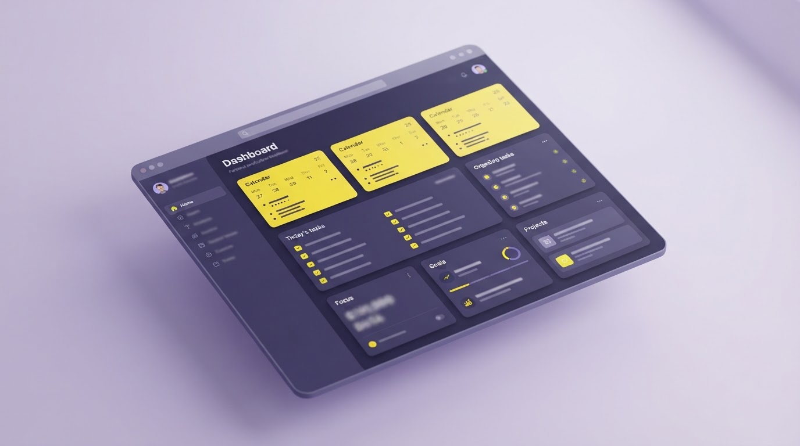
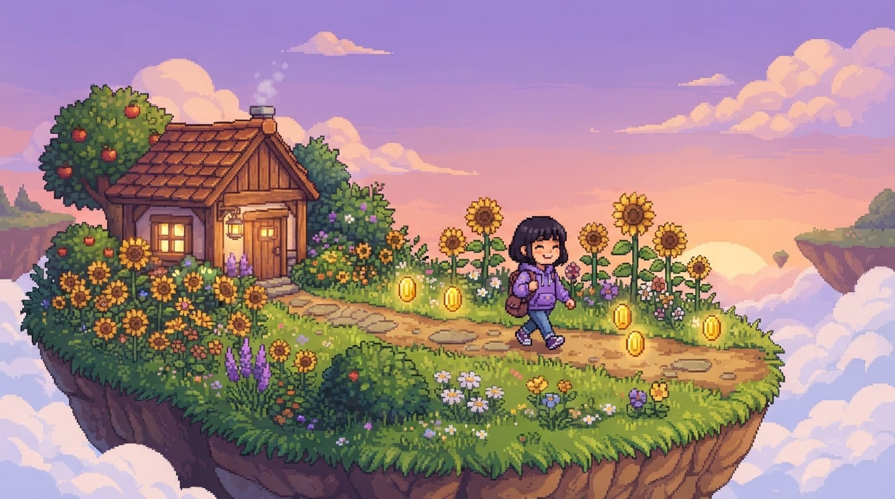
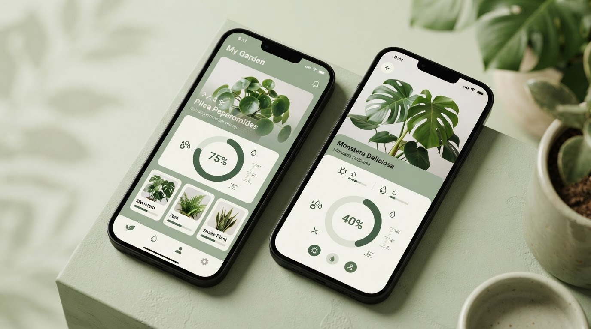
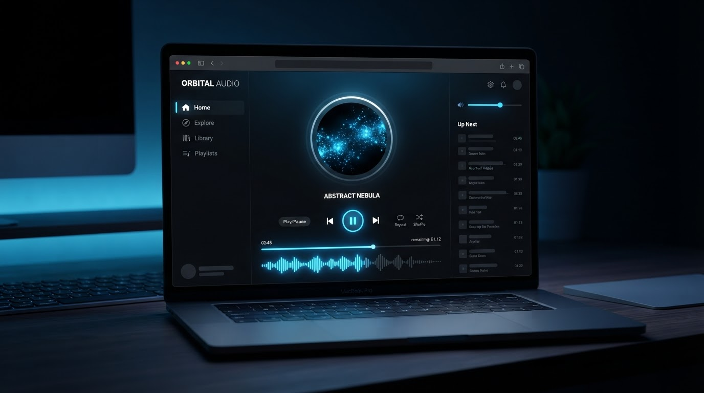
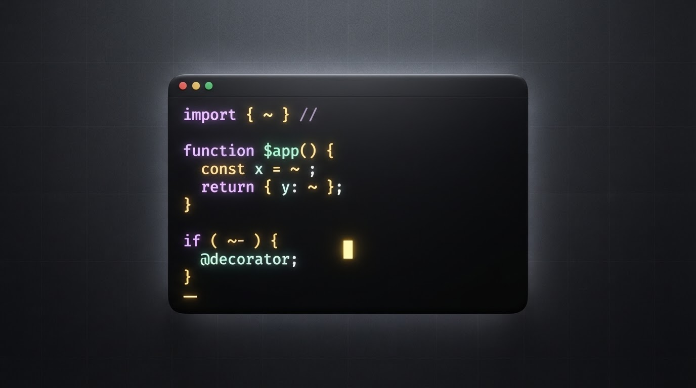
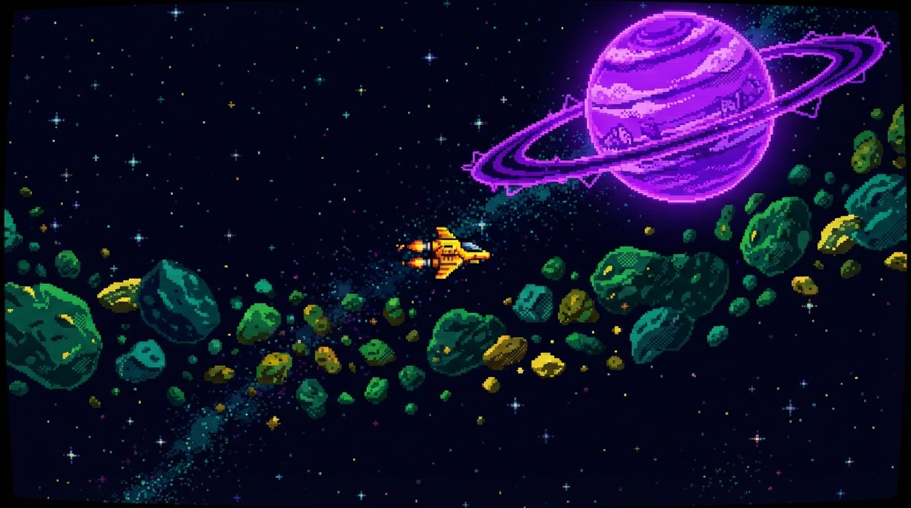

WEB / PRODUTOSunroom
Um cantinho solar para organizar ideias, tarefas e pequenos começos.
Hello Word, I'm
Código, café &
ideias que
florescem.
Uma pessoa dedicada, criativa e responsável, desenvolvendo experiências digitais que conectam tecnologia com o futuro.

“Cultivar ideias. Dar vida em código.”

01 / SOBRE MIM
Sou desenvolvedora web, pessoa criativa e aprendiz para sempre. Gosto de juntar boas ideias, interfaces cuidadosas e código que faz sentido — para construir coisas úteis, bonitas e um pouco inesperadas.
02 / CAIXA DE FERRAMENTAS
as tecnologias que
me acompanham
 HTML
HTML CSS
CSS JavaScript
JavaScript React
React Python
Python Git
Git GitHub
GitHub Figma
Figma Canva
Canva Java
Java Kotlin
Kotlin C#
C# C++
C++ GdScript
GdScript VsCode
VsCode Postman
Postman Notepad++
Notepad++ Android Studio
Android Studio MySql
MySql GIMP
GIMP Aseprite
Aseprite Itch.io
Itch.io Docker
Docker AWS
AWS Postgree
Postgree Firebase
Firebase Draw.io
Draw.io Xampp
Xampp PHP
PHP NodeJs
NodeJs Machine Learning
Machine Learning03 / PROJETOS
Ideias que ganharam tela, cor, movimento e carinho. Uma seleção de projetos desenvolvidos — e ainda em florescimento.

WEB / PRODUTOUm cantinho solar para organizar ideias, tarefas e pequenos começos.

JOGO / NARRATIVAUma aventura delicada sobre explorar, cuidar e encontrar seu caminho.

WEB / MOBILEUma experiência para acompanhar hábitos e cuidar do que importa.

LABORATÓRIOUma estação experimental para sons, pixels e noites criativas.

FERRAMENTAUm espaço simples para registrar descobertas enquanto construo.

JOGO / ARCADEPequeno caos cósmico, grandes planos e uma nave só.
mais projetos em construção
04 / TRAJETÓRIA
Dentro e fora do trabalho, cada passo deixa aprendizado. Tecnologia também é processo, encontro e experiência.
Construindo interfaces acessíveis, sistemas consistentes e produtos que fazem as pessoas quererem ficar.
Da curiosidade ao primeiro deploy, sem pular as perguntas.
Aprendendo a pensar em mundos, regras, ritmo e experiências que começam com “e se...?”.
Compartilhar processo, ouvir outras perspectivas e crescer junto.
05 / AINDA APRENDENDO
Uma lista de coisas que estão ocupando espaço na cabeça — e algumas horas da semana.
O céu é o limite.
06 / CONTATO
Para trocar ideias, falar de um projeto ou só dar um oi.
Escolha o caminho que combina com você.